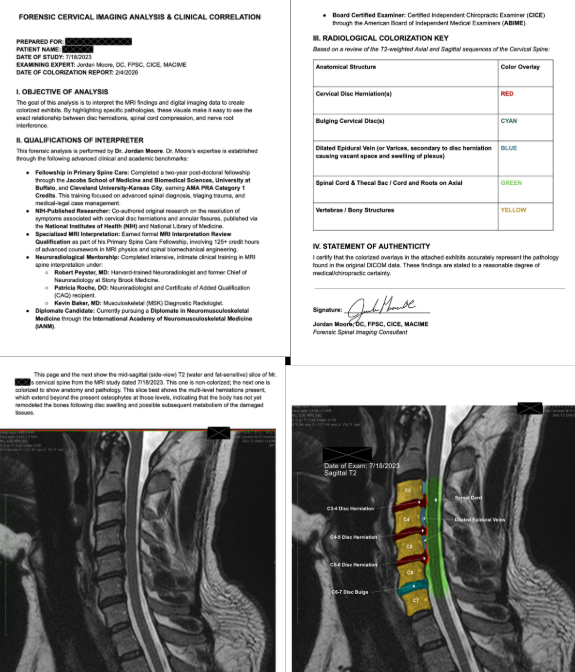

Clinical Resources for Legal Professionals
Dr. Jordan Moore provides independent medical evaluations, objective diagnostic documentation, and impairment-rating reports grounded in AMA Guides methodology — available to attorneys and case managers handling personal injury and workers' compensation matters in the Mobile area.
Clinical Qualifications
Not every chiropractor is qualified to perform an independent medical evaluation. The IME requires a set of clinical skills distinct from those used in treatment: objective examination without therapeutic intent, familiarity with AMA Guides impairment rating methodology, structured report writing to clinical and legal evidentiary standards, and the credentials to defend findings under deposition or testimony.
Dr. Moore holds the Certified Independent Chiropractic Examiner (CICE) designation — a post-graduate credential awarded by the American Board of Independent Medical Examiners — and is a member of the American College of Independent Medical Examiners (ACIME), where his Fellow designation (MACIME) reflects continued active involvement in the independent examination community. His Fellowship in Primary Spine Care (FPSC), awarded jointly by Cleveland University and SUNY Jacobs School of Medicine, reflects advanced academic training in spinal biomechanics, radiology, and the evaluation of post-traumatic spinal injury.
Dr. Moore performs examinations as a neutral third-party evaluator. His reports reflect the objective clinical findings and do not advocate for either party in the underlying matter.
Independent Medical Evaluations
An Independent Medical Evaluation (IME) is a formal clinical examination performed by a credentialed examiner who has no prior treating relationship with the examinee. The purpose is to produce an objective, third-party clinical opinion on questions relevant to the legal matter — which may include the nature and extent of injury, the relationship between the injury and the reported mechanism, the appropriateness and necessity of treatment rendered, the existence of pre-existing conditions and their contribution to the current presentation, and the presence and degree of permanent impairment.
Dr. Moore conducts IMEs for chiropractic-scope injuries: cervical, thoracic, and lumbar spine; extremity joints; and soft tissue injuries including muscle, tendon, and ligamentous injuries. The examination includes a comprehensive history review, physical examination with range-of-motion measurement, orthopedic and neurological testing, and review of all available records and imaging.
A written report is delivered following the examination. Reports are prepared in a structured format that supports attorney review and, if necessary, use in depositions or trial testimony. Dr. Moore is available to testify as an expert witness.
Clinical Documentation
Narrative medical reports serve a different purpose than the progress notes generated during routine clinical care. A narrative is a comprehensive, structured account of the patient's injury, clinical course, and current status — written to meet the documentation standards required for legal proceedings and medical-legal review.
Dr. Moore prepares narrative reports for his own patients as treating physician and, in appropriate cases, as an independent examiner engaged separately from the treating practice. Reports are referenced against clinical examination findings, radiographic and advanced imaging studies, and the medical literature. Impairment ratings are calculated using AMA Guides to the Evaluation of Permanent Impairment, 5th edition — the edition adopted by most state workers' compensation boards and courts for chiropractic impairment — with relevant tables and methodology cited within the report.
Reports are delivered in a format designed for attorney use: clearly organized sections, defined medical terminology with lay explanation where appropriate, and a distinct clinical impression and conclusion section. Turnaround time for a narrative report is typically ten business days from the date of final examination.
Objective Imaging
Ligamentous injury is the structural basis of chronic post-traumatic cervical instability, and it is a category of injury that standard imaging often fails to capture. Plain-film radiographs record a single frozen position; MRI depicts disc and cord morphology but is not a reliable indicator of dynamic ligamentous laxity. This creates an evidentiary gap that has historically made it difficult to objectively document the severity of whiplash-associated disorder in a format admissible in legal proceedings.
Digital Motion X-Ray is a fluoroscopic imaging modality that records video of the spine during active range of motion. When a cervical ligament — such as the alar, transverse atlantal, or capsular ligaments — is compromised by trauma, the resulting instability appears as abnormal translational or angular motion between vertebral segments during movement. This motion is invisible on static imaging and is captured only during dynamic examination.
At Optimum Chiropractic Care, DMX studies are performed on-site and produce frame-by-frame documentation of intersegmental motion. Measured values are compared against established normative data and AMA Guides reference ranges to determine whether an AOMSI finding exists. The resulting video and annotated still-frame evidence provides objective, visual documentation that can be reviewed by attorneys, opposing experts, and the trier of fact.
Forensic Imaging Analysis
Standard MRI images are presented in grayscale, which can make it difficult for non-radiologists — including attorneys, jurors, and adjusters — to visualize the specific pathology present. Dr. Moore offers forensic cervical imaging analysis that applies colorized overlays to MRI sequences, using a defined radiological key to highlight disc herniations, cord compression, epidural vein dilation, and bony structures in distinct colors.
Each forensic imaging report includes a written clinical correlation prepared by Dr. Moore, identifying the anatomical findings, their clinical significance, and their relationship to the reported mechanism of injury. The report is signed and attested by Dr. Moore as a board-certified examiner, and is prepared to evidentiary standards suitable for use in legal proceedings.
This service is available for existing MRI studies — no new imaging is required. Attorneys and case managers may submit DICOM files for review and receive a complete forensic imaging report with colorized exhibits and written clinical correlation.

Sample forensic cervical imaging analysis — colorized MRI with radiological key and written clinical correlation by Dr. Moore, FPSC, CICE, MACIME.
Impairment Rating
X-ray digitization uses specialized software to measure vertebral body angles and translational displacements from flexion-extension radiographic stress views with a precision that exceeds manual visual estimation. These measurements form the basis of Alteration of Motion Segment Integrity (AOMSI) determinations — a specific category of spinal impairment defined in the AMA Guides to the Evaluation of Permanent Impairment, 5th edition, that assigns whole-person impairment based on measured abnormal intersegmental motion.
AOMSI findings are significant in medicolegal matters because they represent objective, radiographically-derived evidence of ligamentous injury rather than subjective symptom reports. A measured finding that meets or exceeds the AMA Guides threshold for a given motion segment supports an impairment rating with a defensible methodological basis — one grounded in published normative data rather than clinical judgment alone.
Dr. Moore prepares AOMSI reports as both treating physician (for his own patients' treating record) and as an independent examiner engaged by attorneys or case managers for existing cases. Reports include the raw measurement data, methodology documentation, normative reference comparison, and a clearly stated impairment conclusion. Dr. Moore is available to testify regarding digitization methodology and AOMSI findings.
Financial Arrangements
Optimum Chiropractic Care accepts Letters of Protection (LOP) from attorneys handling personal injury cases, allowing patients to receive necessary treatment while their legal matter is pending, with fees addressed at the time of case resolution. Acceptance of an LOP does not alter the clinical treatment decisions made on behalf of the patient — treatment is prescribed based on clinical indication, not case status.
To discuss LOP arrangements for a specific client, please contact the office directly. We are happy to coordinate with your office on the documentation required. Inquiries may be directed to Dr. Moore's office at (251) 281-8768 or drmoore@optimumchiropracticcare.com.
Attorney Inquiries
For IME scheduling, AOMSI report requests, record review, or any other medicolegal inquiry, please reach out directly. Dr. Moore's staff can discuss scope, timeline, and scheduling at your convenience.
Send an Inquiry